МЕТАЛЛ / ПРО
УслугиО компанииКонтакты
Услуги / Металлообработка
Лазерная резка металла
Раскрой листового металла по чертежам заказчика.
Рассчитать стоимостьРазработка сайтов
Корпоративные сайты, интернет-магазины, лендинги и веб-сервисы. Полный цикл разработки — от проектирования до запуска и технического сопровождения.
Обсудить проектКомплексное SEO-продвижение клиники эстетической медицины: развитие структуры сайта, расширение поискового охвата и привлечение новых пациентов.
Разработка сайта судостроительной компании с каталогом моделей и интерактивным конфигуратором катеров под задачи заказчика.
Комплексный интернет-маркетинг многопрофильного медицинского центра: развитие сайта, продвижение медицинских услуг и привлечение пациентов.
Настройка и ведение рекламных кампаний для международной школы программирования с целью набора учеников на детские образовательные программы.
Поисковое продвижение и контекстная реклама магазина автозапчастей и специализированного сервиса корейских автомобилей.
Разрабатываем сайты разного масштаба — от компактных лендингов до интернет-магазинов и сложных веб-сервисов. Подбираем формат с учётом ваших задач, бюджета и планов развития.
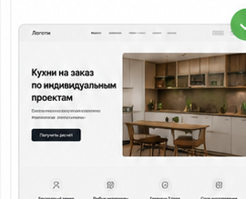
Для компаний с несколькими направлениями деятельности, услугами или сложным продуктом.
Страницы услуг, информация о компании, кейсы, каталог продукции, формы обращения.
От 100 000 ₽Срок — от 8 недель.
Для онлайн-продаж, управления ассортиментом и автоматизации обработки заказов.
Каталог, фильтры, корзина, онлайн-оплата, доставка и интеграции.
От 150 000 ₽Срок — от 12 недель.
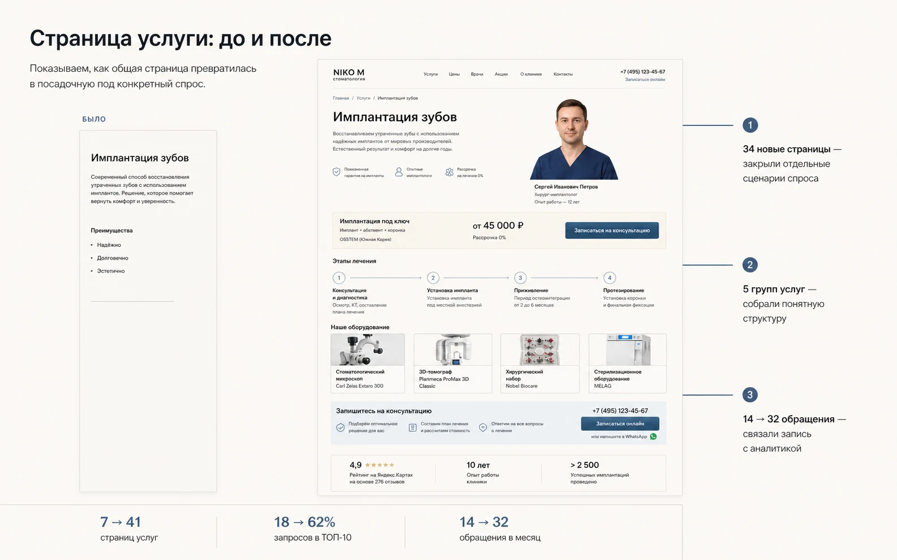
Для производителей, поставщиков и компаний с большим ассортиментом продукции, которым не обязательно принимать оплату через сайт.
Категории продукции, карточки товаров, характеристики, фильтры и запрос стоимости.
От 150 000 ₽Срок — по согласованию.
Для продвижения отдельной услуги, продукта, мероприятия или рекламного предложения.
Презентация предложения, преимущества, условия, формы заявки и аналитика.
От 60 000 ₽Срок — от 5 недель.
Компактный сайт для небольших компаний и специалистов.
Информация о компании, основные услуги, примеры работ и контакты.
От 60 000 ₽Срок — от 4 недель.
Индивидуальная разработка для нестандартных бизнес-задач и автоматизации процессов.
Личные кабинеты, системы бронирования, калькуляторы, корпоративные порталы и образовательные платформы.
Стоимость и сроки рассчитываются индивидуально.
Стоимость определяется количеством уникальных страниц, сложностью дизайна и функциональности, объёмом подготовки контента, необходимыми интеграциями и требованиями к срокам.
До начала разработки согласовываем состав работ и стоимость проекта. Если часть функциональности можно реализовать на следующем этапе, предлагаем поэтапный запуск.
Изучаем поисковый спрос и на его основе проектируем структуру сайта. Для разных услуг создаём отдельные страницы, а запросы с одинаковым смыслом объединяем на одной странице. Это позволяет направлять посетителей из поиска и рекламы сразу к нужному предложению.
На примере сайта металлообрабатывающей компании
Выберите услугу, чтобы увидеть её страницу
3 услуги — 3 страницы
Для каждой услуги — отдельная страница
Раскрой листового металла по чертежам заказчика.
Рассчитать стоимостьИзготовление гнутых деталей по заданным размерам.
Рассчитать стоимость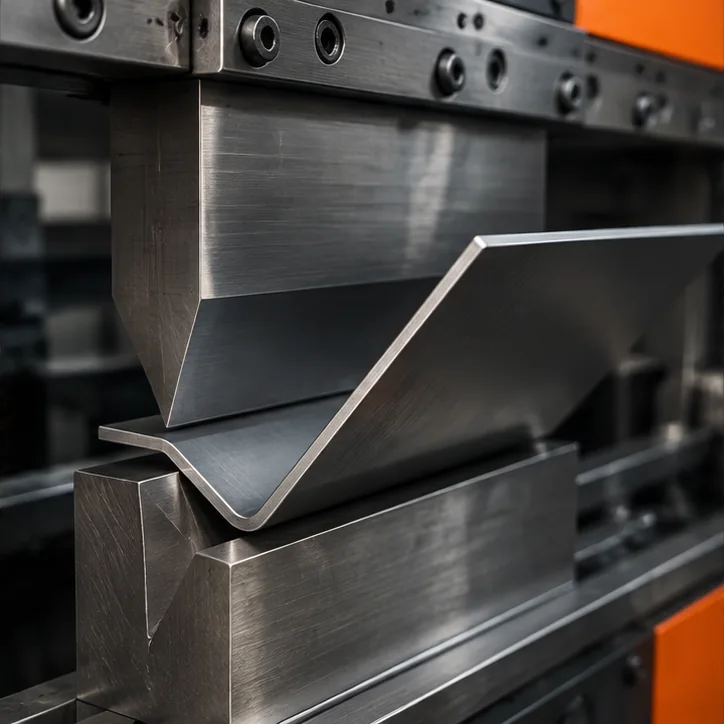
Сборка и сварка металлических конструкций по чертежам.
Рассчитать стоимость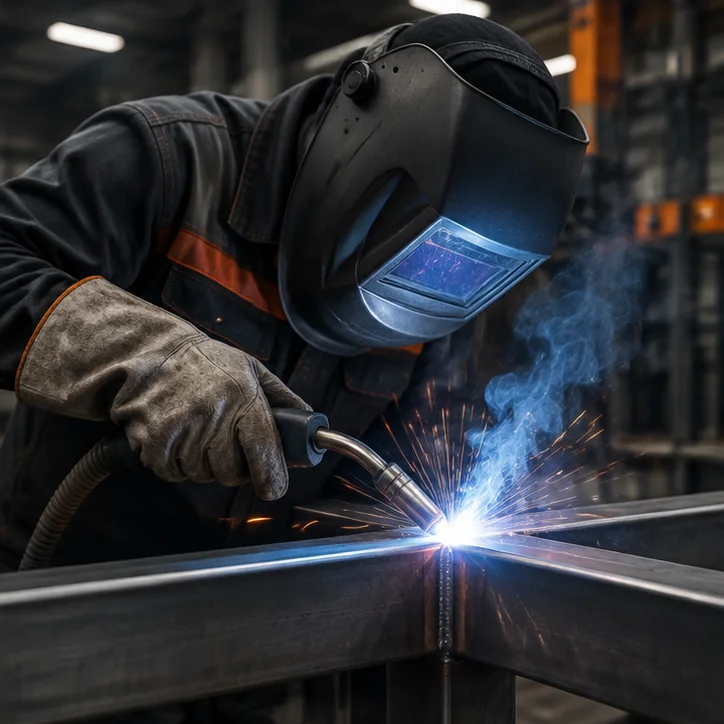
Работаем поэтапно, согласовывая с вами промежуточные результаты. Вы понимаете, как развивается проект и какие решения принимаются на каждом этапе.
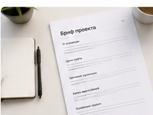
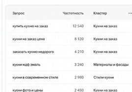
Изучаем бизнес, продукт, целевую аудиторию и конкурентную среду. Определяем задачи будущего сайта, требования к функциональности и критерии оценки проекта.
Результат этапа: требования к сайту и согласованное направление разработки.
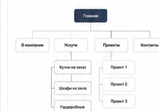
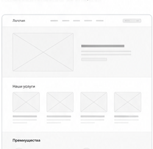
Определяем состав разделов и страниц, продумываем навигацию, содержание ключевых блоков и пользовательские сценарии. Создаём прототипы, чтобы согласовать логику сайта до начала дизайна.
Результат этапа: карта сайта и прототипы ключевых страниц.
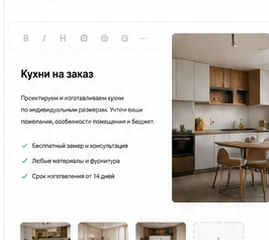
Готовим тексты, редактируем предоставленные материалы, подбираем изображения и определяем, какая информация необходима для каждой страницы.
Результат этапа: подготовленное содержание сайта.
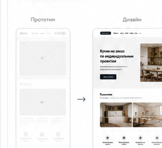
Разрабатываем визуальную концепцию, оформляем ключевые страницы и адаптируем интерфейс для компьютеров, планшетов и смартфонов.
Учитываем фирменный стиль, особенности продукта и удобство взаимодействия с сайтом.
Результат этапа: согласованные дизайн-макеты.
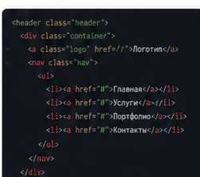
Программируем сайт, подключаем систему управления, реализуем необходимые функции и интеграции с внешними сервисами.
Настраиваем административную часть для управления содержанием сайта.
Результат этапа: рабочая версия сайта на тестовом адресе.
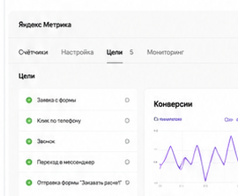
Проверяем интерфейсы, формы, функциональность и интеграции. Настраиваем аналитику и выполняем базовую техническую SEO-подготовку.
После публикации проверяем работоспособность сайта на основном домене и доступность страниц для поисковых систем.
Результат этапа: опубликованный и протестированный сайт.
Подбираем платформу с учётом функциональности сайта, необходимых интеграций, планов развития и стоимости дальнейшего сопровождения.
Корпоративные сайты, крупные каталоги, интернет-магазины и проекты с интеграцией 1С.
Корпоративные сайты, информационные проекты и сайты с регулярно обновляемым содержанием.
Лендинги, небольшие сайты и проекты с относительно простым функционалом.
Веб-сервисы, личные кабинеты, порталы и системы с индивидуальной бизнес-логикой.
Подключаем сервисы, необходимые для работы сайта и автоматизации бизнес-процессов.
После завершения разработки передаём доступы к сайту, домену, хостингу и подключённым сервисам в соответствии с условиями договора. Объясняем, как самостоятельно обновлять информацию и управлять содержанием сайта.
Исправляем технические ошибки в реализованной нами части проекта без дополнительной оплаты в рамках гарантийных условий договора.
Следим за работоспособностью сайта, обновляем программное обеспечение, выполняем резервное копирование и дорабатываем функциональность.
Техническая поддержка сайтовМожем подключить SEO-продвижение, контекстную рекламу и аналитику. Развиваем сайт с учётом новых задач бизнеса и результатов продвижения.
Формируем команду под конкретную задачу. В зависимости от проекта подключаем специалистов по аналитике, проектированию, дизайну, разработке, контенту и SEO.
Подробнее о компании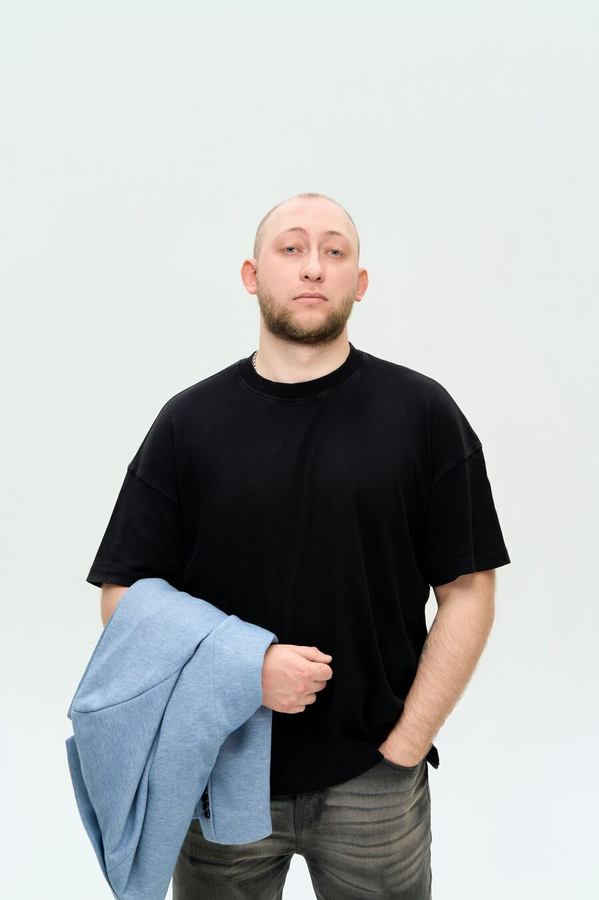

«Спасибо, что разработали для меня сайт. Сделали все как я хотела. Работает все без нареканий. Буду вас всем советовать»Отзывы на Яндекс Картах
«Помогли с разработкой сайта,все быстро и понятно. Работают настоящие специалисты»Отзыв в 2ГИС
«Разработали сайт по определённой тематике, всё понравилось…»
«Хорошая веб-студия, хорошо выполняют свою работу в разработке сайтов, цена приемлема, каждый сможет себе позволить. Разработали сайт по определённой тематике, всё понравилось.»
Нет. Для начала достаточно рассказать о компании, её продуктах или услугах и задачах будущего сайта. Мы поможем определить требования, подобрать подходящий формат и подготовить техническое задание.
Если у вас уже есть готовое техническое задание, можем оценить проект на его основе.
Ориентировочные сроки указаны в разделе с видами сайтов. Продолжительность разработки зависит от количества уникальных страниц, сложности функциональности, готовности материалов и скорости согласования промежуточных результатов.
После обсуждения проекта определяем сроки выполнения работ.
Можем подготовить тексты самостоятельно, отредактировать ваши материалы или работать совместно с вашим специалистом.
Для фотографий используем предоставленные материалы, при необходимости помогаем подобрать изображения, подготовить графику или организовать фотосъёмку. Состав работ согласовываем при подготовке предложения.
Да. Сначала оцениваем структуру, дизайн, техническое состояние и функциональность действующего сайта. Если его основа позволяет решить поставленные задачи, можем обновить интерфейс и необходимые разделы без полной разработки с нуля.
Перед переносом анализируем существующие страницы, их поисковую видимость и структуру адресов. По возможности сохраняем действующие URL, а для изменённых страниц настраиваем перенаправления.
После запуска проверяем индексацию и динамику поисковых показателей. Такой подход помогает минимизировать риски снижения поискового трафика при переходе на новый сайт.
Да. В зависимости от функциональности сайта можно самостоятельно редактировать тексты, изображения, цены, товары, новости и другие материалы через систему управления.
После запуска объясняем, как пользоваться административной частью сайта.
В зависимости от проекта отдельно могут оплачиваться домен, хостинг, лицензии программного обеспечения, платные модули, подписки на сторонние сервисы, фотосъёмка и другие дополнительные работы.
Перечень необходимых расходов определяем при подготовке предложения, чтобы вы могли заранее оценить бюджет проекта.
Гарантия распространяется на технические ошибки в функциональности, реализованной нашей командой в рамках согласованного проекта.
Разработка новых функций, изменение утверждённой логики и расширение сайта относятся к отдельным работам. Подробные условия гарантийного обслуживания фиксируются в договоре.
Расскажите, какой сайт вам нужен или какие задачи не решает существующий. Предложим подходящий формат разработки, определим состав работ и подготовим предварительную оценку стоимости.
Первая консультация бесплатная.